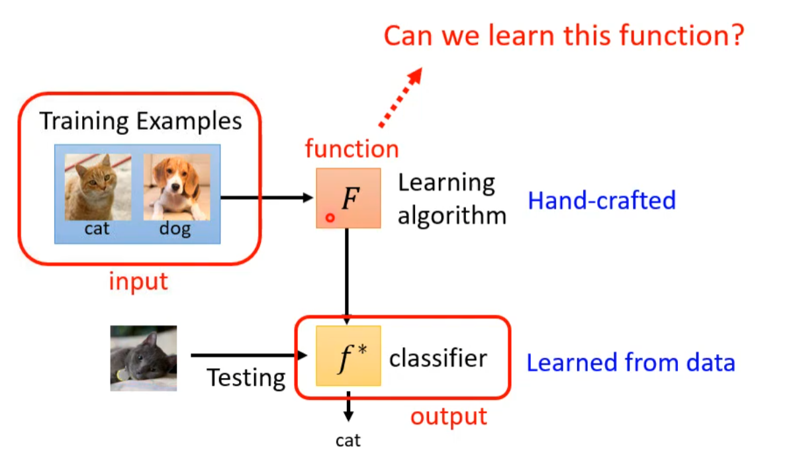
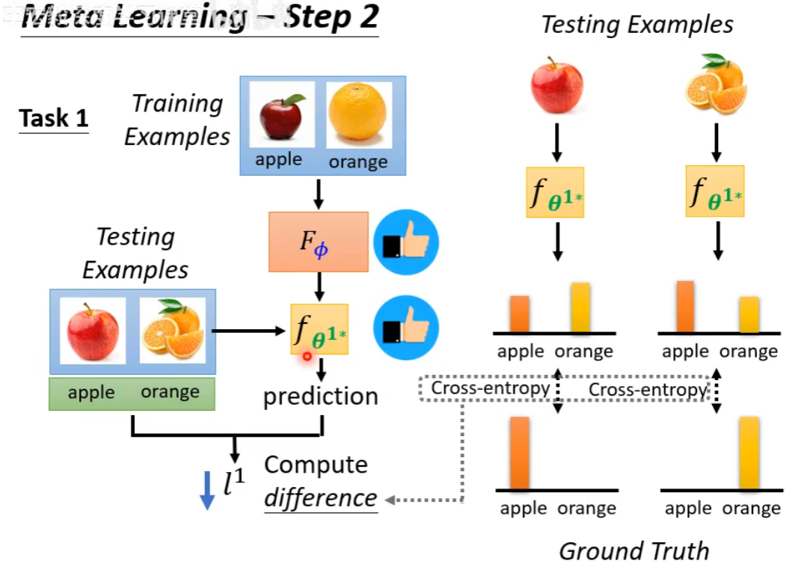
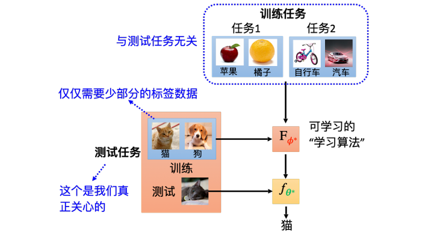
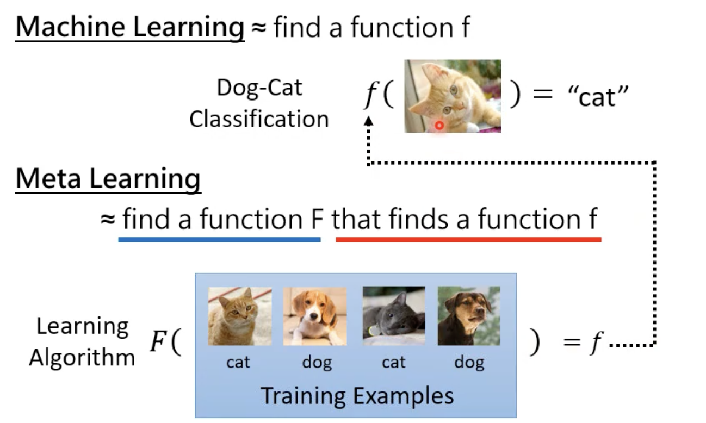
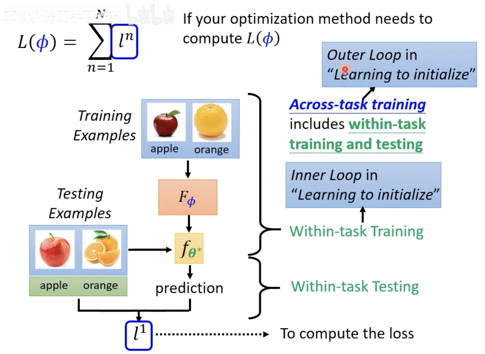
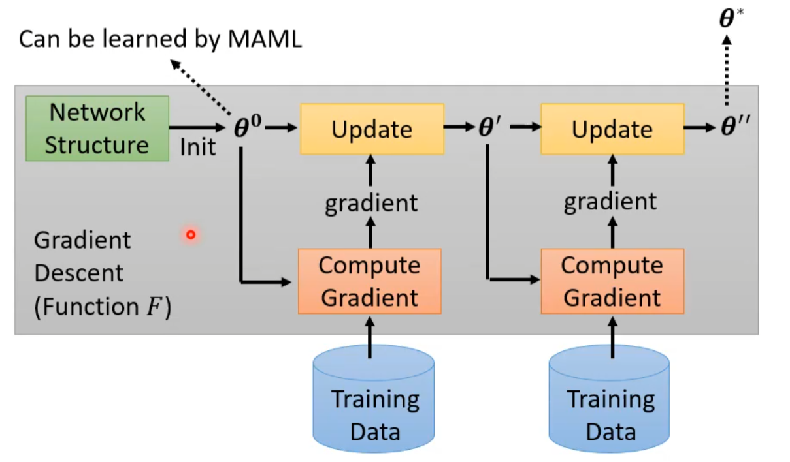
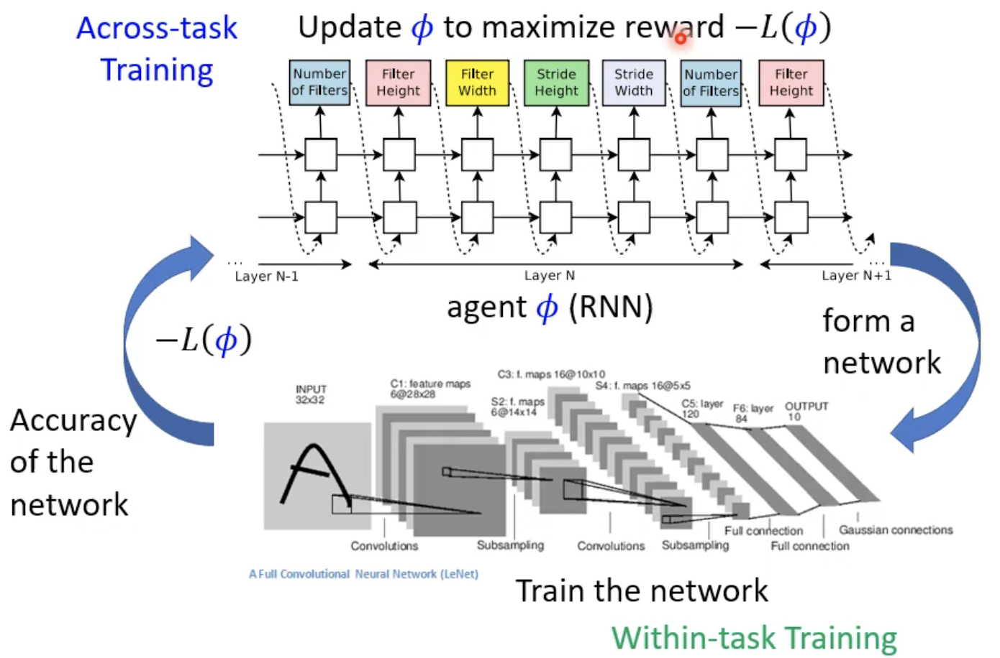
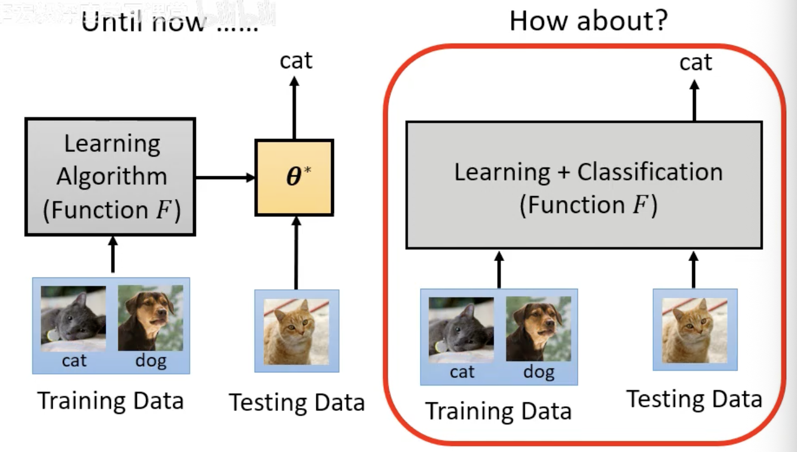

Chapter15. Meta Learning¶
Info
-
元学习（Meta Learning）直译就是 learning to learn，也就是让机器学习“如何学习”。
-
在普通深度学习中，很多东西依赖人工经验：
- 网络架构怎么设计
- 参数如何初始化
- 学习率、batch size 等超参数怎么选
- optimizer 或数据增强策略如何设置
-
元学习希望把这些原本由人决定的部分，也变成可以从数据中学出来的东西。
15.1 Three Steps of Meta Learning¶
元学习也可以类比机器学习的三步框架：
- Define a function with unknown parameters
- Define loss
- Optimization
区别在于，元学习中的“函数”是学习算法本身。
Step 1: Learning Algorithm with Unknown Parameters¶
What is learnable in a learning algorithm?
- 普通机器学习要找的是一个函数 \(f\)：
- 元学习要找的是一个学习算法 \(F\)：
- 也就是说：
- \(F\) 的输入不是单个样本，而是一个训练数据集
- \(F\) 的输出不是预测结果，而是一个训练好的模型 \(f\)
- \(f\) 再拿去处理测试样本，并输出预测结果
元学习的目标就是找到一个好的 \(F\)，让它面对新任务时，也能快速产生效果好的模型。

设 Learning Algorithm 为 \(F_\phi\)，其中 \(\phi\) 表示 learnable components
不同元学习方法会选择学习不同的对象：
- 学习模型初始化参数
- 学习 optimizer
- 学习 learning rate
- ......
普通机器学习中，\(\theta\) 是模型参数；元学习中，\(\phi\) 是学习算法的参数。
Step2: Define Meta Loss¶
普通机器学习用训练样本定义损失；元学习用一批训练任务定义损失，每个任务拆成两部分：
- Support set：任务内的训练数据
- Query set：任务内的测试数据

对于第 \(n\) 个任务：
- 将 support set 输入 \(F_\phi\)
- 得到该任务上的模型 \(f_{\theta_n^*}\)
- 在 query set 上评估 \(f_{\theta_n^*}\)
- 得到该任务的损失 \(l_n\)
把所有训练任务的损失加起来：
- 这个 \(L(\phi)\) 衡量的是：当前学习算法 \(F_\phi\) 在一批任务上的学习能力。
Tip
元学习训练时会用训练任务中的 query set 计算损失。这里的 query set 不是最终测试任务的数据，而是训练阶段已知任务内部的测试部分。
Step3: Optimization¶
最终目标是找到：
- 优化方法可以是：梯度下降、强化学习、进化算法、其他黑盒优化方法

得到 \(\phi^*\) 后，就得到一个学出来的学习算法：\(F_{\phi^*}\)
- 测试时，给它一个新任务的 support set，它就能输出该任务上的模型，再用这个模型处理新任务的 query set
15.2 Meta Learning vs. Machine Learning¶
Meta Learning and Few-shot Learning
-
少样本学习（few-shot learning） 指的是：模型只看少量样本，就要学会完成新任务。
-
两者关系：Few-shot Learning 指的是期待机器只看几个样例，比如每个类别都只给他三张图片，它就可以学会做分类。而我们想要达到 Few-shot Learning 中的算法通常就是用 Meta Learning 得到的 Learning Algorithm
Target¶
- 机器学习要找的是模型：\(D_{\text{train}}\rightarrow f_\theta\)
- 元学习找的是学习算法：\(\{T_1,T_2,\cdots,T_N\}\rightarrow F_\phi\)，其中每个任务包含 support set 和 query set

Training Data¶
机器学习是在单一任务内训练（Within-task Training），训练单位是样本：
元学习是跨多个任务训练（Across-task Training），训练单位是任务：
Support & Query
在元学习文献中常用：
- Support：一个任务内部用于学习的资料
- Query：一个任务内部用于评估的资料
可以类比成：
- support set 类似普通机器学习里的训练集
- query set 类似普通机器学习里的测试集
但注意：训练阶段的 query set 是可以用来更新元学习算法的，因为元学习的训练对象是整个学习算法，而不是某个具体任务的最终模型。
Inner Loop and Outer Loop¶

在很多元学习方法中会看到：
- Inner loop：在单个任务内部，用 support set 训练模型
- Outer loop：跨多个任务，用 query loss 更新学习算法参数 \(\phi\)
Note
元学习也会过拟合。普通机器学习过拟合到训练样本，元学习可能过拟合到训练任务。解决思路也类似：收集更多训练任务、做任务级数据增强、使用验证任务选择超参数。
15.3 Instance-based Meta-learning Algorithms¶
Learning to Initialize¶
Learning to initialize，这里介绍两种算法：
- MAML（Model-Agnostic Meta-Learning，模型无关元学习）
- Reptile
训练目标：
- 普通训练中，模型参数 \(\theta_0\) 往往随机初始化；但初始化会显著影响最终训练效果。
- MAML 希望学出一个初始化 \(\phi\)，最大化模型对超参数的敏感性
- 遇到新任务的数据（样本发生微小变化），模型的损失函数能快速下降（即拥有最大的梯度）
How MAML Trains
MAML 在训练时采用了双层循环机制，也就是“两次求梯度”：
每个任务 \(T_n\) 从同一个初始化参数 \(\phi\) 出发：
- 第一次求梯度（内循环 / 任务适应）
- 用 support set 做一次或几次梯度下降
- 得到该任务适配后的参数 \(\theta_n'\)
- 第二次求梯度（外循环 / 元更新）
- 用 query set 评估 \(\theta_n'\)
- 用所有任务的 query loss 更新 \(\phi\)
若只写一步 inner update：
元学习损失为：
更新目标：
| 学习方法 | 核心做法 | 与 MAML 的关系/区别 |
|---|---|---|
| 自监督学习 (如 BERT) | 用海量无标签数据做代理任务（如填空题）进行预训练。 | 目的相同（找好初始参数），手段不同。自监督靠大量数据，MAML 靠大量不同的任务。 |
| 多任务学习 | 把所有任务的数据混在一起训练，找一个通用的初始化。 | MAML 的基线方法。区别在于 MAML 会严格区分任务的边界，模拟“快速适应新任务”的过程，而不是简单地把数据大杂烩。 |
| 迁移学习/域适应 | 将在源任务学到的知识迁移到新任务或新领域。 | MAML 本质上可以看作是一种基于分类问题的迁移学习，都是希望学过的东西能举一反三。 |
MAML 有两个直观假设：
- 初始化参数离每个任务最终的结果都不远
- 从该初始化参数出发，通过少量梯度更新就能快速适应新任务
Info
MAML 被称为 model-agnostic，是因为它不绑定特定模型结构；只要模型可以用梯度下降训练，就可以尝试套用 MAML。
Learning to Optimize¶
元学习不只可以学习初始化参数，还可以学习很多原本由人工设计的部分。
- 普通 optimizer 如 SGD、Adam 是人为设计的；元学习可以尝试学习一个 optimizer，让它根据训练任务自动决定如何更新参数。

Learn Network Architecture¶
把网络架构看成 \(\phi\)，元学习就变成神经网络架构搜索（Neural Architecture Search，NAS）
NAS 的目标：
- 如果架构选择不可微，可以用强化学习或进化算法搜索；
- 如果想直接用梯度下降，则需要把架构搜索设计成可微问题。

Learn Data Processing¶
元学习也可以学习数据处理策略，例如：
- 自动数据增强
- 自动决定样本权重
- 自动设计采样策略
样本权重本身并没有唯一答案：
- 难样本可能更值得关注
- 但太靠近边界的样本也可能是噪声或错标样本
Beyond Gradient Descent¶
更进一步，可以尝试让一个网络直接读入 support set 和 query sample，然后直接输出 query sample 的答案。这类方法弱化了“先训练、再测试”的分界，经常被称为learning to compare 或 metric-based approach。

核心想法是：与其显式训练一个分类器，不如直接学习样本之间如何比较、如何匹配。
15.4 Applications¶
Few-shot Image Classification¶
元学习最常见的评测任务是少样本图像分类。
- N-way K-shot classification：每个任务中有 \(N\) 个类别，每个类别只有 \(K\) 个样本
- 训练时需要准备很多个 \(N\) -way \(K\) -shot 任务，让模型学会如何从少量样本中快速分类d
Omniglot
Omniglot 是少样本学习里常用的数据集，它包含 1623 个字符类别，每个字符有 20 个样本
构造任务的方式：
- 从字符集合中随机选 \(N\) 个类别
- 每个类别采样 \(K\) 个样本作为 support set
- 再采样一些样本作为 query set
- 得到一个 \(N\)-way \(K\)-shot 任务
通常会把字符类别分成训练类别和测试类别：
- 训练类别用来制造训练任务
- 测试类别用来制造测试任务
这样可以检验模型是否真的学会了“快速学习新类别”，而不是只记住训练类别。